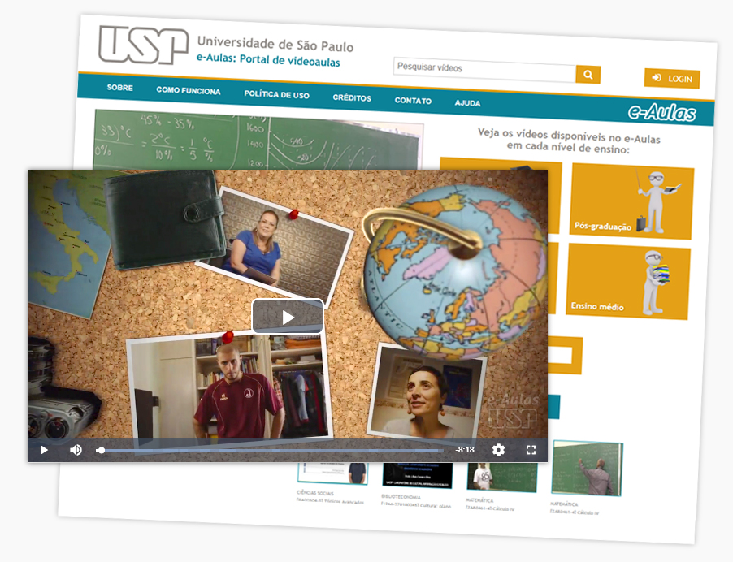
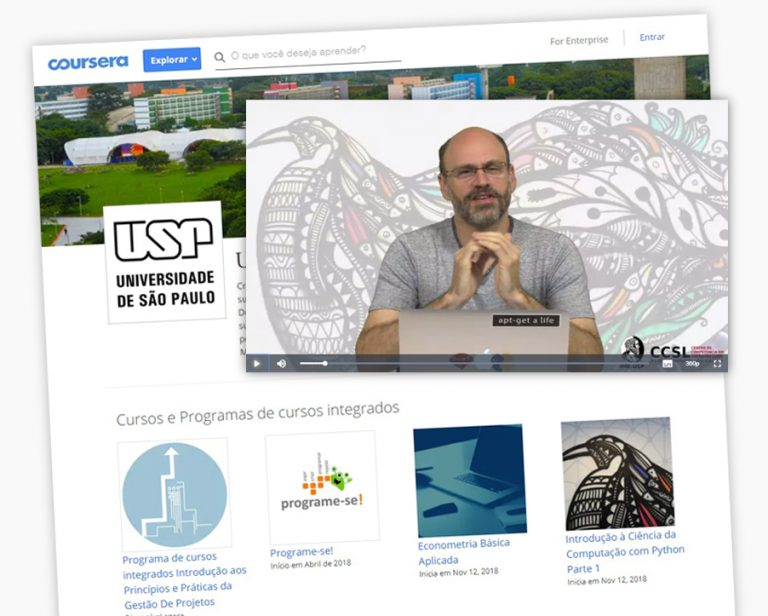
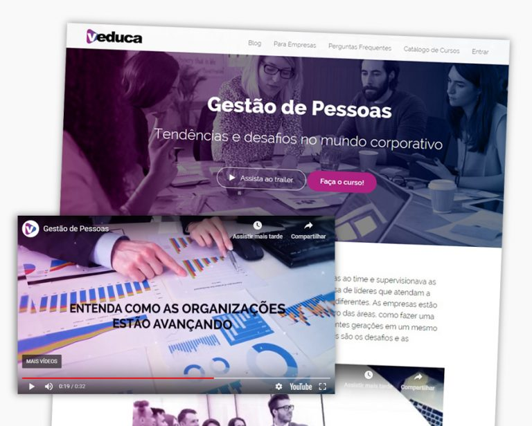
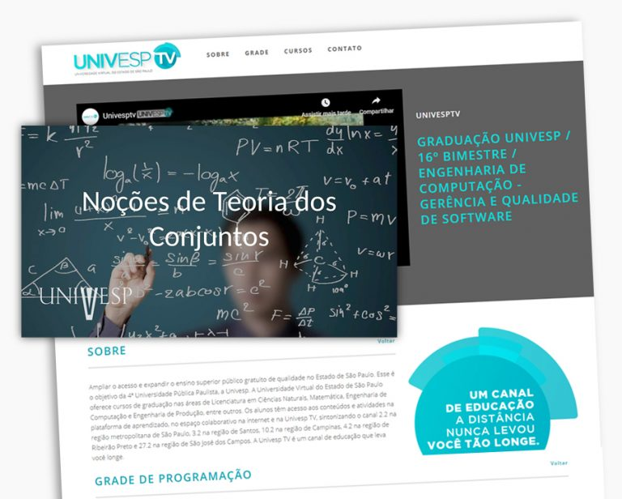

Cursos on-line
Existem diversas plataformas na internet onde o público tem acesso ao conhecimento produzido na Universidade. São cursos livres, eventos e aulas gravadas nas mais diversas áreas do conhecimento. Conheça:
.jpg)
Canal USP
www.youtube.com/usponline
Este é o canal oficial da USP no YouTube. Na seção “Aulas USP” estão postadas aulas de mais de 30 disciplinas de graduação e de pós graduação, em praticamente todas as áreas do conhecimento, abertas a todos – com temas que vão da Qualidade da Democracia ao Direito Penal, do Cálculo à Matemática Financeira.

e-Aulas
eaulas.usp.br
Inspirada em modelos adotados por universidades de grande porte, a USP também possui uma plataforma própria de videoaulas. Todo o conteúdo do portal é gratuito e aberto para a população em geral, e, além disso, qualquer professor da USP pode disponibilizar suas aulas, cursos e palestras na plataforma. Inaugurado em 2012, o e-Aulas contém mais de 1.400 horas de vídeos nas áreas de exatas, humanas e biológicas.

Coursera
pt.coursera.org/usp
A Universidade oferece diversos cursos no Coursera, que é uma das principais plataformas de cursos on-line do planeta. Econometria básica, programação, marketing e criação de startups são alguns dos cursos disponíveis. Alguns dos cursos oferecem certificado – nesse caso, é preciso ser aprovado com um mínimo de aproveitamento em todas as tarefas e testes propostos e pagar uma taxa de US$ 29.

Veduca
veduca.org
Diversos professores da USP oferecem cursos nesta plataforma direito, economia, geografia, ciências, história e política. O acesso pode ser feito de forma gratuita, mas é possível fazer o curso online certificado pagando uma taxa de R$ 49.

Univesp
univesptv.com.br
Uma das ferramentas da Universidade Virtual do Estado de São Paulo (Univesp), a plataforma Univesp TV também conta com videoaulas da USP.